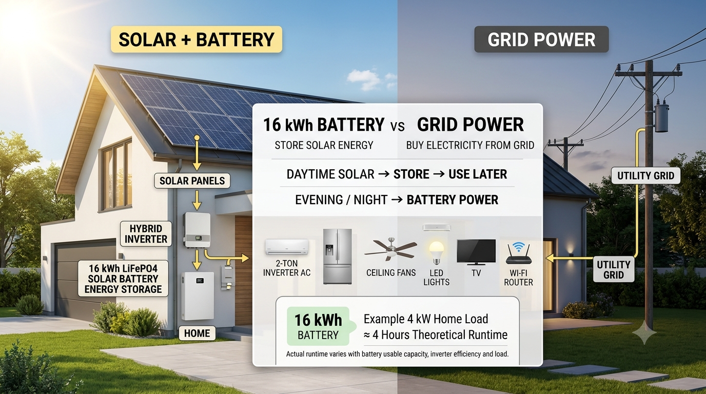

Solar Guide | September 1, 2026
Solar Battery vs Grid Power in 2026: How Much Can a 16kWh Battery Save You?
For homeowners with solar panels, the biggest question is often what happens after the sun goes down. A 16kWh home battery can store excess daytime solar and make that energy available later, reducing the amount of electricity a household needs to buy from the grid.
How a 16kWh Solar Battery Works
During sunny hours, solar panels can supply the home's appliances first. Excess production can charge the battery. Later, the battery can supply selected household loads when solar production falls or the grid is unavailable.
Solar panels → hybrid inverter → home loads + battery → evening/night loads
16kWh Battery Runtime Example
| Average Home Load | Theoretical Runtime |
|---|---|
| 2 kW | About 8 hours |
| 4 kW | About 4 hours |
| 6 kW | About 2.7 hours |
| 8 kW | About 2 hours |
These are simple energy calculations: 16kWh divided by the average load. Real runtime is lower or different because usable battery capacity, inverter efficiency, reserve settings and changing appliance loads matter.
What Can a 16kWh Battery Run?
A 16kWh battery can support a mix of essential household loads such as refrigerators, LED lighting, fans, internet equipment, televisions and other appliances. Running a large air conditioner at high power for long periods uses substantially more energy.
Solar Battery vs Grid Power
| Feature | 16kWh Battery | Grid Power |
|---|---|---|
| Uses stored solar | Yes | No |
| Nighttime supply | Yes, if charged | Yes, subject to grid availability |
| Backup during outage | Can provide backup when properly configured | Normally unavailable during outage |
| Upfront equipment cost | High | Low for the customer |
How Much Money Can a 16kWh Battery Save?
There is no single dollar saving that applies to every U.S. home. Savings depend on local electricity rates, solar production, battery round-trip efficiency, battery cycling, utility rules and how much solar would otherwise be exported.
A useful way to estimate savings is to calculate how many kilowatt-hours the battery shifts from solar production during the day to household consumption later, then compare that energy with the applicable grid electricity cost.
Is a 16kWh Battery Worth It in 2026?
For a home with meaningful evening electricity use, a 16kWh battery can be useful because it increases the amount of self-generated solar energy that can be consumed later. It can also provide backup power when installed with a compatible hybrid inverter and properly designed backup circuits.
Battery Sizing Tips
- Start with your hourly evening and overnight electricity use.
- Decide which appliances must remain powered during an outage.
- Check the battery's usable capacity and continuous power rating, not only its kWh headline.
- Match the battery to a compatible hybrid inverter.
- Compare utility export and time-of-use rules before calculating ROI.
Bottom Line
A 16kWh solar battery is best viewed as an energy-shifting and backup tool, not simply a replacement for grid electricity. The more useful question is how many kilowatt-hours your home can shift from daytime solar to higher-value evening consumption. Use your actual utility rate and household load to calculate the potential 2026 savings.
See our U.S. solar battery price guide → Explore solar inverter guides →